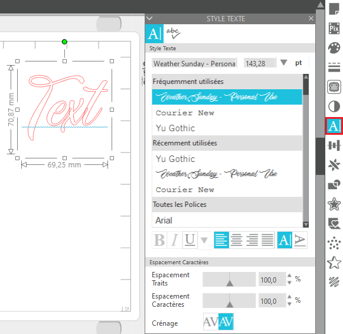

Découpeuse vinyl: Silhouette Curio¶
Note
Le papier doit dépasser les bordures en haut à gauche. Renforcer l’adhérence en pressant avec la main.
Tutos officiel: https://youtu.be/kgOgcJDGt9c Générer des templates: https://www.templatemaker.nl/fr/
Réglages découpe 1: https://www.noscreas.fr/trucs-astuces-fiches-techniques/nos-reglages-de-decoupe/ Réglages découpe 2: https://boutdepapier.reskator.fr/2012/04/07/reglages-de-coupe-pour-quelques-papiers/
todo lexique tapis Papier de transfert à applanir pour coller la découpe Le store et récupérer des images
Vracs: Guide officiel: https://www.silhcdn.com/m/d/user-guides/curio-en.pdf Tuto: https://www.findingtimetocreate.com/2016/11/getting-started-silhouette-curio/ Tuto 2: https://silhouette-secrets.com/2019/03/13/lets-explore-the-curio-getting-started/ Emboss: https://youtu.be/x16kJ5ClA9I
Setting up your Silhouette Curio: https://youtu.be/FrmaGT_qzXo Curio review: https://www.youtube.com/watch?v=wg4Yd1rmpuc
How to cut images on Silhouette Curio 3t for beginners, simple, easy, quick: https://www.youtube.com/watch?v=HnJT4H78BOs
fiche technique: https://www.lafourmicreative.fr/silhouette/86892-silhouette-curio-814792018705.html

Logiciels¶
Utilisation¶
Préparation du matériel¶
Libérez de l’espace pour déplier les pieds de stabilisation à l’avant et arrière de la Curio.
Prenez une base d’adhérence aux dimensions de la matière à couper.
Enlevez la protection et collez la matière.
Important
La matière doit être aligné en haut à droite du tapis.
Accrochez-le avec les quatre maintiens sur le côté.
Attention
TODO parler des plateformes et comment les choisir. Il y en a une de 1 et deux de 2. Apparement visible dans Studio.
Glissez le support dans la curio, l’encoche (cercle rouge) doit dépasser le bord de la Curio (trait orange):
Prenez la lame de découpe et réglez sa profondeur avec l’avant de la Curio. La flèche rouge indique la profondeur choisi, cette flèche dit être aligné avec l’avant de la Curio pour procéder au réglage.
Note
Profondeurs de lame:
1: vinyl
2 - 3: papier
4 - 6: papier cartonné
7 - 10: toile

Placez la lame à l’emplacement du cercle rouge, tournez l’interrupteur dans le sens inverse des aiguilles d’une montre pour l’ouvrir et dans l’autre pour le vérouiller.

Branchez et allumez la Curio, la machine va initialiser sa position par défaut.
Note
Vous pouvez initialiser la position par défaut en cliquant sur le boutons avec les deux flèches (à droite du bouton pause).

Préparer une découpe avec Silhouette Studio¶

a
Vous ne pouvez pas modifier la taille du texte dans les options, vous verrez plus bas comment faire.
Après un clic:
cadre de sélection pour redimensionner
cercle vert pour orienter